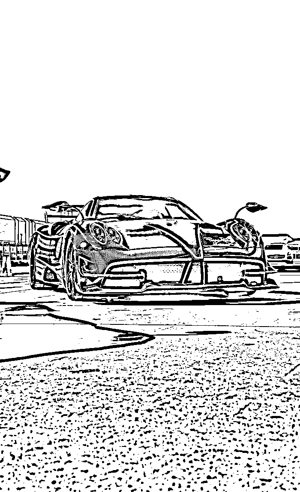

Original Input Image

Thresholded Output
CUDA implementation of adaptive thresholding for document binarization. Achieved up to 193× speedup over a CPU implementation while maintaining identical output quality.
Adaptive thresholding is a document image processing technique used to convert grayscale images into binary images. Unlike global thresholding, which applies a single threshold to the entire image, adaptive thresholding computes a local threshold for every pixel based on its surrounding neighborhood.
This makes it particularly effective for scanned documents containing shadows, uneven illumination, faded text, and noisy backgrounds.

| Image Size | Window Size | CPU Time (ms) | GPU Time (ms) | Speedup |
|---|---|---|---|---|
| 700 × 1145 | 7 | 109.63 | 1.68 | 65× |
| 700 × 1145 | 15 | 330.52 | 1.70 | 193× |
Input Image (.avif)
↓
Convert to Grayscale PGM
↓
Adaptive Thresholding
↓
CPU Implementation
↓
GPU CUDA Implementation
↓
Performance Comparison
↓
Binary Output Image
Source code, build instructions, and implementation details are available on GitHub: